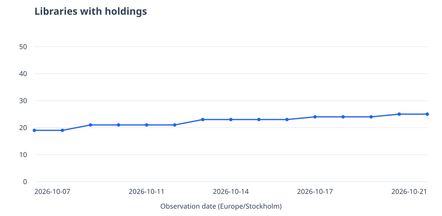
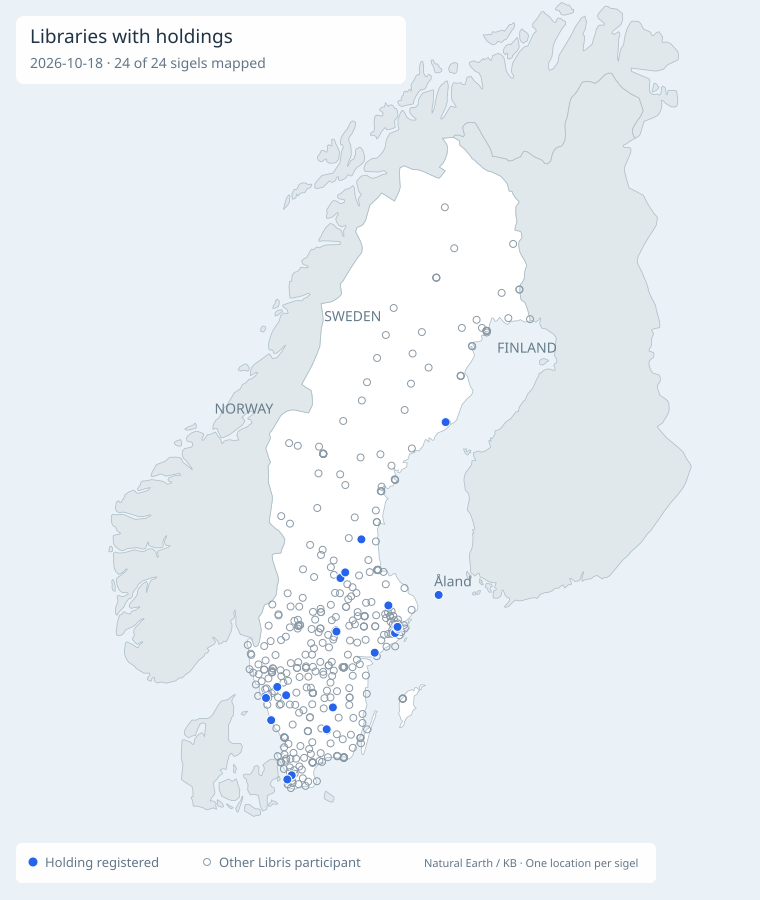

Library holdings · Libris
Välfärd och livsvillkor: Perspektiv på samtida samhällsbilder
25library sigels with holdings
The latest observation is more than one day old. The date above shows when the holdings were last checked.

Earlier book: Ojämlikhetens dimensioner: 50 library sigels, observed 2026-10-19. A single dated snapshot; its count sets the upper scale unless the daily series exceeds it.
Library map

Latest changes
Compared with 2026-10-19: added Sosb; removed none.